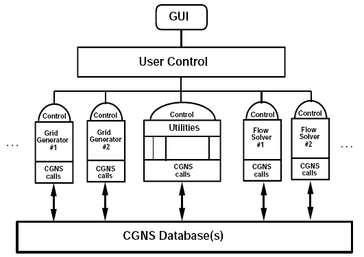
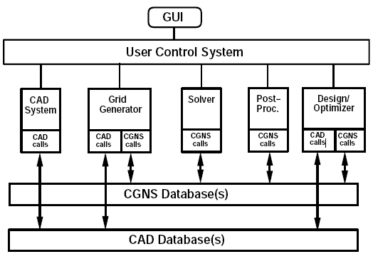

CGNS Summary
CGNS (CFD General Notation System)
Summary for Open Meeting, May 1999
Prepared by: Douglas R. McCarthy
douglas.r.mccarthy@boeing.com
May 20, 1999
CGNS System - General Description
- Standards for CFD data specification, storage and I/O
- Open software implementing the standards
- Developed under AST contract by:
- Boeing Seattle
- Boeing St. Louis
- ICEM CFD
- NASA Langley
- NASA Ames
- NASA Glenn
- Participation by:
CGNS System - Standardized Data and I/O for CFD
Purpose:
- Exchange data easily between groups and sites, and across computing
platforms
- Archive data in self-documenting, machine independent form
- Exchange data directly between "applications" codes (i.e., grid
generators, flow solvers, post-processors)
- Make applications themselves interchangeable
- Reduce time to incorporate new capabilities
- Allow applications engineers to choose methods based on technical
requirements
- Allow developers to focus on added value rather than I/O
- Facilitate the development of infrastructure and general utilities
for manipulating CFD data
Scope:
- Pointers to CAD Geometry
- Multi-block structured grids (all types)
- Unstructured grids
- Field properties
- Boundary conditions
- Connection information
- Units, non-dimensionalization, turbulence models, equation sets,
etc.
Implementation:
- Incorporate CGNS I/O into existing or new applications codes
- Codes share information using the file system as a data bus
- Codes are still run under user selection and control
- User responsible for file manipulation and directory maintenance
- No file "locking"
CGNS Software Relationships

Two Level System
Independent Data Base Manager, ADF
- Tree, with links
- All nodes in tree are the same:
- Labeling information
- Dimensioning information
- Data (optional): Integer, Real, Character, etc.
- Optimized for dense data
- Minimal instruction set (ADF Core)
CFD General Notation System (CGNS)
- Data stored in ADF files
- Accessed by "Mid" level API which understands CFD
ADF (Advanced Data Format)
- Stand-alone general Database Manager
- Stores tree-structured binary data, patterned on St. Louis' Common
File Format (CFF)
- Coded in C, with FORTRAN access
- Code and files fully portable
- Extensively debugged and tested
- Thoroughly documented
- In use in place of CFF at St. Louis, and in Wind code
CGNS (CFD General Notation System)
Standards:
- SIDS (Standard Interface Data Structures)
- Defines the intellectual content of CFD data in detail
- File Mapping Conventions
- Define the way the content is stored in the ADF file(s)
Software:
- CGNS Mid-level Library (API)
- Routines to access CFD-related objects stored in ADF files
at a level much higher than the ADF Core. Meant to be
incorporated into applications code.
CGNS System Current Completion Status (5/99)
|
|
| SIDS |
| File Mapping |
| Mid-Level Routines
|
|
| CAD Pointers |
| Agreement achieved 3/27/98,
implementation in V1.1 |
| Agreement achieved 3/27/98,
implementation in V1.1 |
| In work, V1.1
|
| Structured |
| Complete V1.0 |
| Complete V1.0 |
| Complete V1.0
|
| Unstructured |
| Complete V1.1 |
| Complete V1.1 |
| In work, V1.1
|
| Chemistry |
| Nomenclature proposal on table |
| Complete |
| No special code needed
|
| Moving Grid |
| Proposals on table |
| Some code needed
|
|
Software Development Status
- Wind (NPARC) converted from CFF to ADF; conversion to CGNS underway
at Boeing (V3.0)
- CFF-to-CGNS Converter
- Done at Boeing S.L. using ADF Core level
- CGNS-to-CFF in work at UTRC using API
- Plot3d-to-CGNS Converter
- Overflow converted to CGNS (Kiris) - ADF and API levels
- Pegasus-to-CGNS converter (Kiris)
- Installation into V5 at MicroCraft
- CFL3D converted (non-overset) (Rumsey)
- TLNS3D underway (Poirier)
- ICEM CFD
- Grid Generation, V3 Visualizer, etc.
System Demonstration
- Grid generated at NASA-Ames using local tools
- Sent to St. Louis; overset connections calculated by G-man, written
in CGNS format
- Sent to Ames, run in Overflow
- (Runs in CFL3D, but point-match grid only partially complete)
- Demonstrated at Team Meeting, March 98:
- (Displayed in V3 via ICEM-CFD implementation)
CGNS/CAD Software Relationships

Current CGNS Documentation and Software (V1.0)
- Documents:
- CGNS Overview
- The CGNS System (AIAA 98-3007)
- ADF Core User's Manual
- SIDS (Standard Interface Data Structures
- SIDS-to-ADF File Mapping Document
- CGNS Mid-level Library Document
- Software:
- CGNS Midlevel Library (API)
- ADF Core
- Site:
What's Happening Now
- Web Site
- 120+ registrants
- 20+ countries
- Expansion of Interest
- Engine Manufacturers
- Software Vendors
- Other Industries
- Transfer of Control
- Open, public forum
- Boeing support for ISO standard